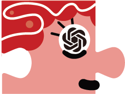
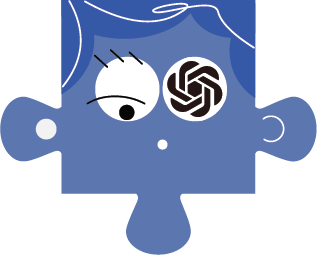
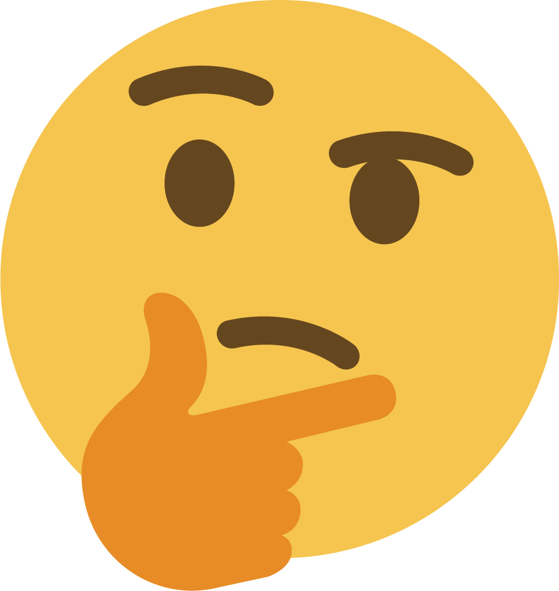

Exploring Collaboration Mechanisms for LLM Agents:
Exploring Collaboration Mechanisms for LLM Agents:
A Social Psychology View
,
,
,
As Natural Language Processing (NLP) systems are increasingly employed in intricate social environments, a pressing query emerges: Can these NLP systems mirror human-esque collaborative intelligence, in a multi-agent society consisting of multiple large language models (LLMs)? This paper probes the collaboration mechanisms among contemporary NLP systems by melding practical experiments with theoretical insights. We fabricate four unique 'societies' comprised of LLM agents, where each agent is characterized by a specific 'trait' (  easy-going or  overconfident ) and engages in collaboration with a distinct 'thinking pattern' ( debate or  reflection). Through evaluating these multi-agent societies on three benchmark datasets, we discern that certain collaborative strategies not only outshine previous top-tier approaches, but also optimize efficiency (using fewer API tokens). Moreover, our results further illustrate that LLM agents manifest human-like social behaviors, such as conformity and consensus reaching, mirroring foundational social psychology theories. In conclusion, we integrate insights from social psychology to contextualize the collaboration of LLM agents, inspiring further investigations into the collaboration mechanism for LLMs.

@article{DBLP:journals/corr/abs-2310-02124,
author = {Jintian Zhang and
Xin Xu and
Ningyu Zhang and
Ruibo Liu and
Bryan Hooi and
Shumin Deng},
title = {Exploring Collaboration Mechanisms for {LLM} Agents: {A} Social Psychology
View},
journal = {CoRR},
volume = {abs/2310.02124},
year = {2023},
url = {https://doi.org/10.48550/arXiv.2310.02124},
doi = {10.48550/ARXIV.2310.02124},
eprinttype = {arXiv},
eprint = {2310.02124},
timestamp = {Thu, 19 Oct 2023 13:12:52 +0200},
biburl = {https://dblp.org/rec/journals/corr/abs-2310-02124.bib},
bibsource = {dblp computer science bibliography, https://dblp.org}
}
This website is adapted from Nerfies, licensed under a Creative Commons Attribution-ShareAlike 4.0 International License.